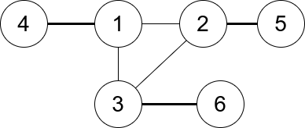
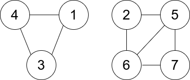

| Category | Difficulty | Likes | Dislikes |
|---|---|---|---|
| Algorithms | Hard | 352 | 292 |
godaddy | amazon
You are given an undirected graph. You are given an integer n which is the number of nodes in the graph and an array edges, where each edges[i] = [ui, vi] indicates that there is an undirected edge between ui and vi.
A connected trio is a set of three nodes where there is an edge between every pair of them.
The degree of a connected trio is the number of edges where one endpoint is in the trio, and the other is not.
Return the minimum degree of a connected trio in the graph, or -1 if the graph has no connected trios.
Example 1:

Input: n = 6, edges = [[1,2],[1,3],[3,2],[4,1],[5,2],[3,6]]
Output: 3
Explanation: There is exactly one trio, which is [1,2,3]. The edges that form its degree are bolded in the figure above.Example 2:

Input: n = 7, edges = [[1,3],[4,1],[4,3],[2,5],[5,6],[6,7],[7,5],[2,6]]
Output: 0
Explanation: There are exactly three trios:
1) [1,4,3] with degree 0.
2) [2,5,6] with degree 2.
3) [5,6,7] with degree 2.
Constraints:
2 <= n <= 400edges[i].length == 21 <= edges.length <= n * (n-1) / 21 <= ui, vi <= nui != vi